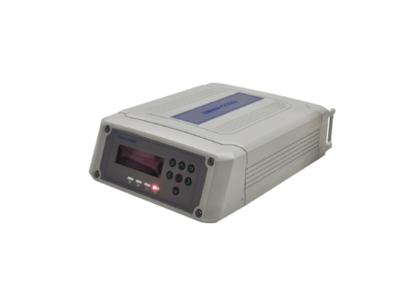

GNSS 接收机
M20 GNSS 接收机
适用于实时位移监测，为现场连续观测提供稳定可靠的数据基础。
高精度监测产品体系
面向关键基础设施安全监测，提供高精度硬件、智能平台与连续感知能力，在毫米级变化中捕捉风险信号。
面向地表位移、结构安全与地质灾害监测的高精度卫星定位设备，支持毫米级连续监测。
适用于实时位移监测，为现场连续观测提供稳定可靠的数据基础。

一体化 GNSS 监测站，适用于复杂环境下的长期自动化监测。

搭配米度高精度天线与实时解算引擎，可实现亚毫米至毫米级监测精度。

面向长期无人值守变形监测场景设计，兼顾稳定性与易部署性。

为大地测量、地震研究与大型结构健康监测提供稳定的高质量信号基础。